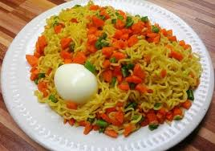

Indomie Noodles Recipe

Description
Indomie noodles are a quick and delicious instant noodle dish, popular across many countries. Made by boiling the noodles and mixing them with a flavorful seasoning packet, they can be easily customized with vegetables, eggs, or meats to create a more filling meal. Indomie noodles are loved for their convenience and versatility, often enjoyed as a snack or a light meal.
The noodles are typically prepared in just a few minutes, and you can add stir-fried vegetables, boiled eggs, or even chicken or shrimp to elevate the dish. It's a perfect solution for a fast and tasty meal.
Ingredients
- 1-2 packs of Indomie noodles
- 1 egg (optional)
- 1 tablespoon vegetable oil
- ½ onion (chopped)
- 1 small carrot (chopped)
- 1 green bell pepper (chopped)
- 1-2 sausages or cooked chicken (optional)
- 1 clove garlic (minced)
- Spring onions (for garnish)
- Indomie seasoning packets (included with noodles)
- Water for boiling
Steps
- Boil the noodles: In a pot, bring water to a boil and cook the Indomie noodles for 2-3 minutes until soft. Drain and set aside, saving a little of the cooking water.
- Sauté the vegetables: In a pan, heat the vegetable oil over medium heat. Add the chopped onions, garlic, carrots, and bell peppers, and sauté for 3-4 minutes until softened.
- Cook the egg (optional): Push the vegetables to the side of the pan, crack the egg in, and scramble it until fully cooked. Mix with the vegetables.
- Add protein (optional): If using sausages or cooked chicken, stir them into the vegetable mixture and cook for 1-2 minutes.
- Mix in noodles: Add the cooked Indomie noodles to the pan along with the saved cooking water. Stir in the seasoning packets and toss everything together to combine.
- Serve: Garnish with chopped spring onions and serve hot. Enjoy your customized Indomie noodles with your choice of toppings!
Go back